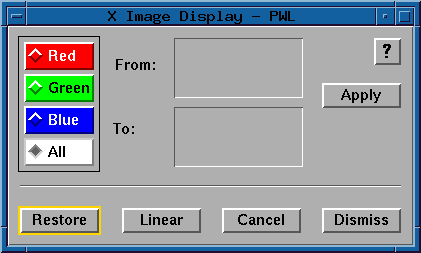

5.3.3 Piecewise Linear
The piecewise linear mapping function allows the user to
build a mapping with a piecewise linear fit from a set of
mapping pairs (or break points). The mapping pairs are
entered as a list of from values and a list of to values
(see below). The from values are a list of image values
specifying the input values at the break points, while
to values indicate the output values at the break points.
Values are then calculated between each mapping pair entered.
The values are determined by the nearest integer to the line
drawn between each mapping pair.

The red, green, blue, and all radio buttons allow
the user to select which of the mapping components to modify.
Each displayed image has three separate mapping components, one
for the red, one for the green, and one for the blue portion
of the mapping.
- Red:
- When selected, only the red component of the mapping will be modified.
The green and blue components will not be changed.
- Green:
- When selected, only the green component of the mapping will be modified.
The red and blue components will not be changed.
- Blue:
- When selected, only the blue component of the mapping will be modified.
The red and green components will not be changed.
- All:
- When selected, all components of the mapping will be adjusted equally.
This is the default.
- From:
- A text field which allows the user to enter the input mapping values.
These values must be in increasing order between 0 and 255 and may be
separated by either spaces or commas.
- To:
- A text field which allows the user to enter the output mapping values.
There must be the same number of To values as From values,
and they must be in the range 0 to 255 and may be
separated by either spaces or commas.
- Apply:
- Verify the mapping pairs are valid, calculate the new mapping based on the
mapping pairs entered, and apply the mapping to the displayed image.
- Restore:
- Reload the mapping that was applied to the image when the piecewise linear
mapping function was initiated.
- Linear:
- Load a linear or identity mapping.
- Cancel:
- Close the piecewise linear mapping panel without saving the current
piecewise linear mapping. The
current mapping is not removed from the image, but other functions
(such as Cursor) will have no knowledge of the mapping.
- Dismiss:
- Close the piecewise linear mapping panel and save the current piecewise
linear mapping. This does
not save the mapping permanently. It only indicates that other functions
(such as Cursor) will now be aware of the mapping